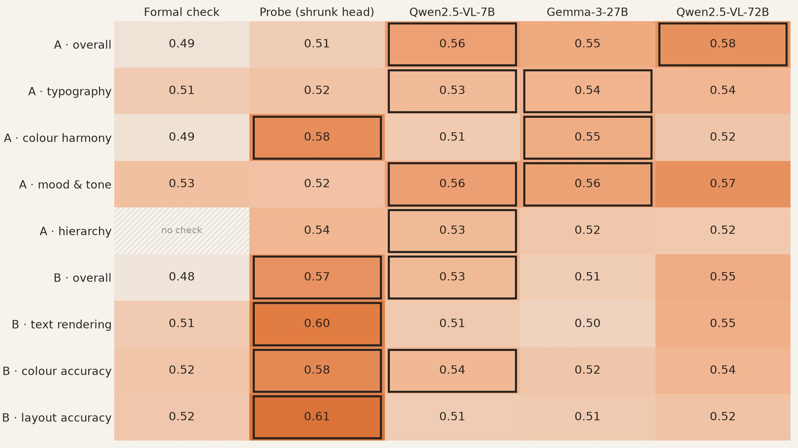
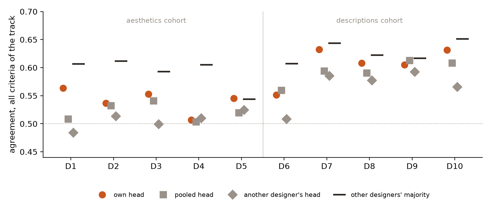
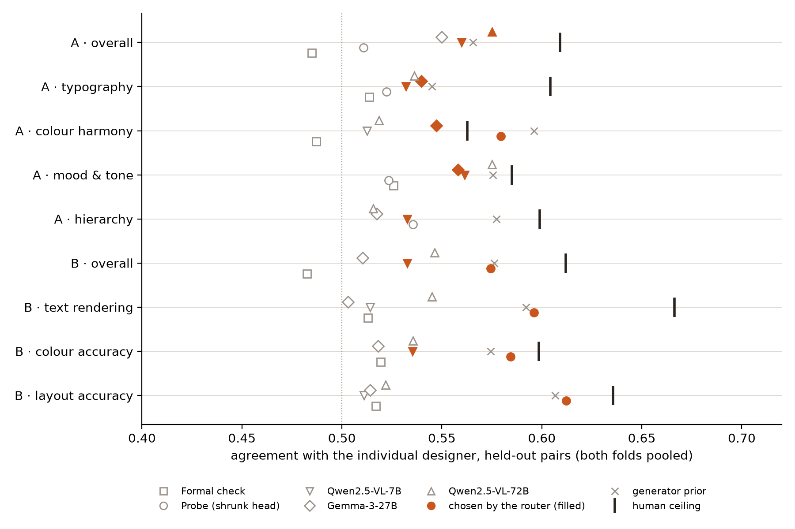
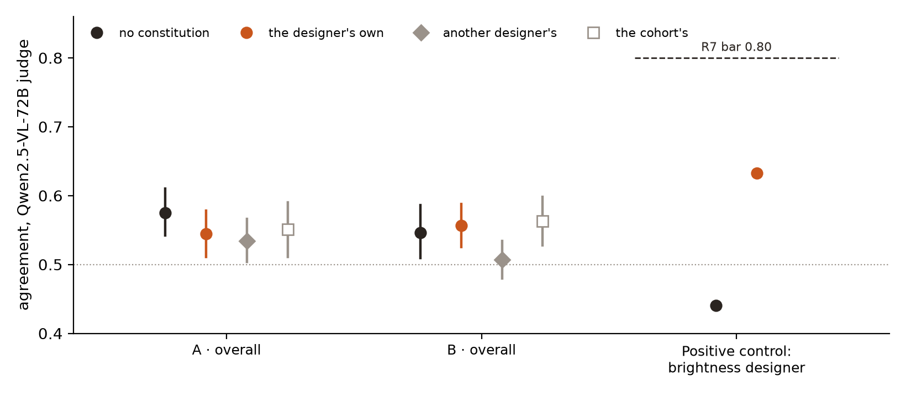
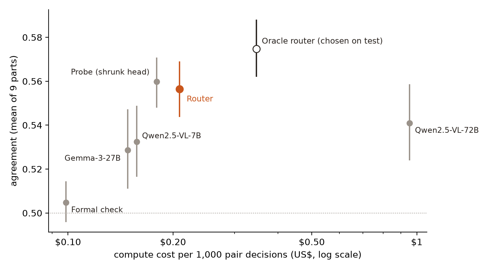
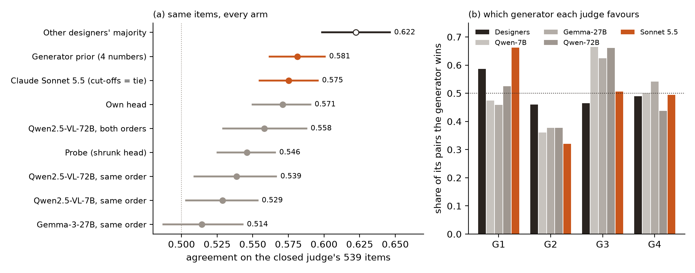

← Research·The Taste Stack · Episode 7·Experiments·
Four numbers predict a designer's taste as well as a trained reward head
Ten professional designers ranked images from four text-to-image models. Four numbers per designer, how often they pick each model, predicted their held-out choices 57.9% of the time; a reward head trained on that designer's earlier choices, 57.0%. Open vision-language judges managed 53-54%, a written taste constitution did not help them, and a router was no more accurate than the head alone, at a higher cost.

results/router.json.Summary: the short answer and the key results
In short
Can a reward model learn one designer's taste, can a written taste constitution capture it, and can a router send each part of a taste judgment to the cheapest judge that is good enough?
- Little is personal. On 16,170 held-out choices by 10 designers (TASTE), a reward head fitted to one designer agreed with them 0.570 of the time; a head pooled over their cohort at the same strength, 0.562; another designer's head, 0.533.
- Four numbers do as well. How often a designer picks each of the four image models predicts them 0.579 of the time. Taking each model's average look out of the head's features drops it to 0.523.
- Judges sit near chance. Three open vision-language judges scored 0.529-0.541 and favoured a model the designers ranked near the bottom. An exploratory closed judge scored 0.575 on a 539-item sample, and favoured the designers' favourite.
- Written taste and routing did not help. A designer's induced constitution did not beat none (0.551 against 0.561); rules written in advance scored 0.505; a router reached 0.556 at $0.21 per 1,000 decisions, the head alone 0.560 at $0.18. All five predictions missed.
For scale: the other designers' majority agrees with each designer 0.608 of the time, and no judge that ignores who is choosing can beat 0.745.
Key results
| What we tested | Result | Compared with |
|---|---|---|
| Does a reward head learn one designer? | A little. Own head 0.570 [0.558, 0.581]; own − another designer's head +0.037 [+0.026, +0.047]. But a pooled head at the same strength scores 0.562: own − pooled +0.007 [−0.004, +0.019] (post hoc). The registered shrunk head beat the registered pooled head by +0.007 [−0.003, +0.017] (P1 miss) | Other designers' majority: 0.608 [0.592, 0.625]. Bound for any designer-blind judge: 0.745. Heads on shuffled rankings 0.49-0.52 |
| What does it learn? | Mostly each model's look. Four numbers per designer, one per model: 0.579 [0.565, 0.592], level with the own head (+0.009 [−0.004, +0.023]). Removing each model's average from the features costs the own head 0.047 [0.036, 0.057] | Six image statistics alone: 0.568 |
| Do vision-language judges agree with designers? | Open ones barely. Qwen2.5-VL-72B 0.541 [0.524, 0.559], Qwen2.5-VL-7B 0.532, Gemma-3-27B 0.529; all three favour a model the designers rate near the bottom (its win rate 0.62-0.66 from the judges, 0.465 from designers). Exploratory: Claude Sonnet 5.5 on 539 items 0.575 [0.555, 0.596], against 0.539 for Qwen-72B read in the same order, and it favours the designers' favourite | Best head minus best open judge +0.029 [+0.009, +0.047] (P3 miss: bar +0.05) |
| Does a designer's written constitution help a judge? | No. Qwen2.5-VL-72B on the overall-preference criteria: no constitution 0.561, own 0.551, the cohort's 0.557, another designer's 0.521. Own − another's +0.030 [+0.007, +0.053], just under the +0.03 bar (P2 miss) | Positive control: a synthetic "prefers brighter images" designer, 0.44 → 0.63 with its constitution (bar 0.80, failed) |
| Do rules written in advance work? | No. OCR text, text order, colour and colour-harmony checks: 0.505 [0.496, 0.514]; on text rendering 0.513 (P5 miss: bar 0.65) | Where two images' OCR scores differ by more than 0.2: 0.632 (155 judgements, exploratory) |
| Does a router save money? | No. 0.556 [0.544, 0.569] at $0.21 per 1,000 decisions; the probe everywhere 0.560 at $0.18; the 72B judge 0.541 at $0.95 (P4 miss) | An oracle router picking each criterion's best judge on the held-out data: 0.575 at $0.35 |
01Introduction
Show five professional designers the same four posters, made from one brief by four image models, and ask each to rank them. Pick any one designer and any two posters. The other four designers' majority predicts which poster your designer prefers 61 times in 100. A small model trained on that designer's own earlier choices predicts it 57 times in 100. Knowing only how often your designer picks each image model, four numbers, predicts it 58 times in 100. This note asks what a "personal taste" reward actually learns, whether writing a designer's taste down helps a judge, and whether a router can send each part of a taste judgment to the cheapest judge that is good enough.
| Tool | What it is | Analogy | Needs labels? | In this note |
|---|---|---|---|---|
| Formal check | A rule written before seeing any choice, run by a program on facts extracted from the image: does the text the brief asks for appear (OCR), in the right order; do the colours the brief names appear | A scale that weighs the dish: exact, but only for what it was built to weigh | No | Tier 0 |
| Reward head (a probe) | A one-layer model on numbers already computed for each image (an image embedding, brightness, contrast); it scores each image, and the higher score wins a pair. Fitted to choices with the Bradley-Terry model | A critic who learned one diner's taste from their past orders | Yes, a few hundred pairs | Tier 1: pooled, per designer, or both |
| Vision-language judge | An open model shown the brief, the criterion and both images, asked "which is better? 1 or 2"; we read the probability of each answer, in both orders | A food critic who tastes both dishes and picks one | No | Tiers 2-4: 7B, 27B, 72B |
| Taste constitution | Five written principles ("Prefer the design that …") induced from one designer's choices by inverse Constitutional AI, then pasted into a judge's prompt | The diner's written list of what they like, handed to the critic | Yes, to write it | Added to the 72B judge |
| Router | A rule that sends each criterion to the cheapest judge whose accuracy on training data is within 0.01 of the best | A head chef deciding who tastes which course | Yes, to choose | Section 4.5 |
What is known. DesignPref collected 12,000 pairwise choices by 20 designers on generated interfaces and reported that personalised models predict individual designers better than aggregated ones; its data is not released. TASTE, which is released, found that its ten designers agree about as much as movie raters do and that their disagreement looks like "a weak shared ordering with rater-specific noise", not taste factions; a frozen-embedding reward head there reached 0.58-0.61 against the panel. In this series, Episode 1 (AI-written text), Episode 3 (AI-built web pages) and Episode 5 (brand rules) found the same pattern: open judges near chance (AUROC or accuracy 0.51-0.80), probes and formal checks strong (0.90-1.00).
What is missing. Those episodes had labels with a known answer: who wrote the text, where the page is hosted, what the rulebook says. Taste for one person has no answer key but the person. We found no study that puts a personal reward head, a judge, a written constitution and a formal check on the same held-out choices of one person, or that asks what a personal head actually learns.
When the target is one designer's taste, do personal reward heads, written constitutions and a cost-aware router work, and does the series' "probes beat judges" finding still hold?
What this note does. It scores 16 arms on the same 16,170 held-out choices by 10 designers, each with a scene-bootstrap interval. It contributes:
- a per-designer vs pooled comparison with the controls that decide what "personal" means: another designer's head, a data-matched and a strength-matched pooled head, shuffled rankings, the other designers' majority, and the bound for any designer-blind judge;
- a generator-identity test: how much of a designer's measured taste is which image model they like;
- inverse-CAI constitutions for ten designers, tested against no constitution, the cohort's and another designer's, with a synthetic positive control;
- a router over five judge tiers with measured costs, against every single judge and an oracle, and an exploratory closed judge added after the fact;
- a router explorer (section 4.6) to change the tolerance and the available judges.
What counts as success. Written down before any held-out score:
- every measuring tool passes its known-answer bar first (section 4.1);
- "personal" means beating another designer's head and the pooled head, not only chance;
- "taste" means surviving the generator-identity control;
- a constitution must beat another designer's constitution and no constitution, and the recipe must recover a known synthetic taste.
02Setup
2.1 Data: TASTE, because DesignPref is not released
The series plan named DesignPref (12,000 pairs, 20 designers). Its paper links no data, nothing under its name is on the Hugging Face Hub or GitHub, and the TASTE paper notes the same, so this episode uses TASTE on the Hugging Face Hub (MIT licence, revision 731a7f58).
| Item | Count |
|---|---|
| Designers (professionals, paid), two disjoint cohorts; called D1-D10 here | 5 + 5 |
| Scenes: one brief (a poster, flyer, social post, invitation or similar) with one image from each of four text-to-image models (FLUX.2 [max], GPT Image 1.5, Nano Banana 2 and Seedream 5.0 Lite; called G1-G4 here in a fixed random order) | 80 + 80 |
| Criteria ("parts"). Track A (briefs describe the look): overall, typography, colour harmony, mood & tone, hierarchy. Track B (briefs describe the content): overall, text rendering, colour accuracy, layout accuracy | 5 + 4 |
| Rankings: each designer of a track ranks the four images of every scene on every criterion; each ranking gives 6 pairs | 3,595 → 21,570 pairs |
Ten rankings (two briefs' worth) list eight images instead of four and were dropped before any analysis. Splits are by scene, from a hash: 20 dev scenes per track for every choice of features, prompts and settings, and the other 60 per track in two confirmation folds, A and B. Everything trained (heads, constitutions, the router's choices) is fitted on one fold and scored on the other, both ways. The main metric is agreement: the share of a designer's held-out pairs where an arm picks the image the designer ranked higher (a tie counts half). Each criterion's agreement pools its pairs over designers, and the headline is the mean over the nine criteria. Intervals are 95% bootstraps over scenes (2,000 draws), paired for differences. "Held-out" means scored on the fold the arm was not fitted on; a "pre-registered" prediction was committed with its threshold before any held-out score. No image or brief text is in this note or the repository.
2.2 The arms
- Reward heads (L2 logistic regression on feature differences, no intercept, both orders of each pair): pooled (the designer's whole cohort), own (this designer only), shrunk (one fit with a shared part and a per-designer offset, the registered probe), another designer's (the next designer's own head, scored on this designer), and pooled with one designer's amount of data. Features: the first 8 principal components of a SigLIP-so400m image embedding plus six image statistics (brightness, contrast, colourfulness, sharpness, edge density, luminance entropy); chosen on dev (section 4.1 explains why).
- Baselines: the generator prior (a head on the four one-hot model labels: four numbers per designer and criterion); image statistics alone; heads with each model's mean removed from the features; heads on rankings shuffled within each designer's scene (10 times); and the other four designers' majority on the same pair.
- Formal checks, each written before reading any choice: the brief's quoted strings against OCR of the image (text and overall criteria); their top-to-bottom order (layout); the brief's colour words found in the pixels (colour accuracy, mood); fit of the hues to the best of seven classical harmony templates (colour harmony). None for hierarchy.
- Judges: Qwen2.5-VL-7B, Gemma-3-27B and Qwen2.5-VL-72B (AWQ), on vLLM, shown the brief, the criterion's one-line definition and both images at 640 px, asked for "1 or 2". The verdict is the mean of the two orders. Two prompt wordings were tried on dev; each judge keeps its better one.
- Constitutions, on the two overall-preference criteria: for each designer and training fold, Qwen2.5-VL-72B sees each of the designer's training pairs and which image they chose, and writes one principle "Prefer the design that …". The principles are clustered into 16, each is tested by Qwen2.5-VL-7B on 72 of the designer's training pairs, and the 5 that agree most become the constitution. The cohort's constitution is built the same way from all five designers' principles against their majority.
- The router: for each criterion, on the training fold, the cheapest tier whose agreement is within 0.01 of the best tier's; applied to the held-out fold. Costs are measured compute per pair decision on Modal (section 4.5).
- An exploratory closed judge, added after the held-out scores were read (section 4.8): Claude Sonnet 5.5 through OpenRouter, same prompt and images, on one pair per brief and criterion, under a $4 cap in code.
03How the study was run
- Write the plan with its Design section and five predictions, and commit it before building anything (predictions in section 6).
- Check the data: rebuild TASTE's pairs and reproduce its published agreement table (all nine criteria within 0.003).
- Extract facts for 644 images on Modal: embeddings, OCR, pixel statistics (one A10G, minutes).
- Pass each tool's known-answer bar on dev: OCR on 200 rendered images, colour checks on 100 synthetic ones, the head on a synthetic brightness designer, each judge on 180 known-answer pairs. Two bars failed first and were fixed on dev (section 4.1).
- Tune on dev only: head features and strength, judge wording (2 per judge); every try in results.tsv.
- Commit the amendments (the two fixes and the judge fallback below) before any confirmation score.
- Score once on the confirmation folds: heads cross-fitted A → B and B → A; 3 judges × 3,234 image pairs × 2 orders; 3,924 principle proposals, 59,904 principle tests and 9,276 constitution judgements.
- Re-check outputs: read the principles written for each designer and for the synthetic designer (section 4.4), and the OCR scores behind the text check (section 4.3).
- After reading the results: correct three claims (a pooled head at the own head's strength, intervals on the generator prior, the bound for a designer-blind judge), and add the closed judge with its sample fixed in the plan before its first reply. All labelled post hoc or exploratory below.
| Fixed before any trial | Changed after reading dev results or the data |
|---|---|
| Data, exclusions, splits, arms, metrics, the router rule (tolerance 0.01), constitution sizes, the rulers and five predictions | Head features: the full embedding memorised the training images and failed its known-answer bar; the bar became a gate and 8 principal components plus image statistics passed it |
| OCR text check: each quoted string matched anywhere in the OCR text | It failed its bar (0.88) because repeated strings matched each other's copies; now each string is matched to its own text box (0.99) |
| A closed frontier judge (Claude Sonnet 5.5) as the top tier, through OpenRouter | OpenRouter refused the first call for lack of account credit ($0 spent). As the series' rules require, the top tier became the largest open model (Qwen2.5-VL-72B), and Gemma-3-27B joined as a second model family |
| Cost per decision measured on Modal | Timing varied up to threefold between runs (cold or warm file reads); the plan named no run, the first run is used, and the router under the repeats is reported (section 4.5) |
| The other designers' majority as the "ceiling" | It is not a bound (the generator prior beats it on colour harmony); it is now a human reference, beside the in-sample bound 0.745 |
Conditions: vLLM 0.10.1.1 on H100s, temperature 0, one output token with the top 20 log-probabilities, images at 640 px on the long side; heads in scikit-learn on a laptop, seconds each. Total spend: $22.57 of Modal compute from Modal's billing (cap $60 in code) and $3.61 of OpenRouter calls for the exploratory closed judge (cap $4 in code).
04Results
4.1 Every ruler passes, two after a fix on dev; the constitution control fails
| Ruler | Bar | Result | Pass |
|---|---|---|---|
| R1 data: rebuilt pairs reproduce TASTE's mean pairwise Kendall τ on all 9 criteria | within 0.01 | within 0.003 | Yes |
| R2 head: learns a synthetic designer who prefers the brighter image (dev); sits at chance on shuffled rankings | ≥ 0.90; 0.45-0.55 | first 0.44; then 0.92 and 0.50 | Yes, after a fix |
| R3 OCR: the text check ranks a correct rendering above a one-letter misspelling (100 pairs); the order check recovers a known order (75) | ≥ 0.95 each | first 0.88; then 0.99 and 1.00 | Yes, after a fix |
| R4 colour: named-colour presence on 498 calls; a harmony-template image above a random-hue one (100) | ≥ 0.95; ≥ 0.90 | 1.00; 1.00 | Yes |
| R5 judges: on 180 dev pairs with a known answer (the true image against another brief's image, or against a blurred, low-quality copy); replies that parse | ≥ 0.90; ≥ 98% | 1.00 all three; 100% | Yes |
| R6 judges on real pairs: Qwen2.5-VL-72B and Gemma-3-27B pick the same image (3,234 held-out pairs) | ≥ 0.60 | 0.648 | Yes |
| R7 constitution control: the brightness designer's own constitution predicts its held-out choices | ≥ 0.80 | 0.633 (none 0.441) | No |
The R2 failure is the most instructive. A head on the full 1,152-number embedding fitted the brightness designer's training pairs perfectly and scored 0.44 on new scenes: each criterion has only about 60 distinct training images on dev, so the head memorised them. That is why the registered head uses 8 principal components plus image statistics. The judges pass R5 easily, so they see obvious defects; the question is whether they see taste. The two orders gave different answers on 45-48% of held-out pairs for every judge, which is why each verdict averages both orders.
4.2 Personal taste is real but small, and most of it is which model made the image
![Agreement with each designer, mean of nine criteria, with 95% intervals. Human reference (the other designers' majority) 0.608; router 0.556; per-designer head 0.570; shrunk head 0.560; pooled head 0.553; pooled head with one designer's data 0.559; another designer's head 0.533; generator prior 0.579; image statistics 0.568; shrunk head with generator removed 0.520; Qwen2.5-VL-72B 0.541; Gemma-3-27B 0.529; Qwen2.5-VL-7B 0.532; formal checks 0.505. A shaded band near 0.49-0.52 marks heads on shuffled rankings.](figures/fig_leaderboard.png)
A designer's own head (0.570) beats another designer's head by +0.037 [+0.026, +0.047]: something in one designer's past choices predicts their future choices better than the same amount of another designer's. It beat the registered pooled head (0.553) by +0.017 [+0.005, +0.029], but the two were fitted at different strengths (the own head with much stronger regularisation). Refitted at the own head's strength, the pooled head scores 0.562, and the own head's edge shrinks to +0.007 [−0.004, +0.019] (post hoc). The registered probe, the shrunk head that mixes a shared part with a per-designer offset, scored 0.560 and beat pooled by +0.007 [−0.003, +0.017]: P1 missed. So one designer's own data does not beat a well-regularised cohort model here.
Most of what the heads learn is each model's average look. Each scene holds one image from each of the four models, so "which model made this" is a feature of every pair. A head on nothing but those four labels, fitted per designer, scored 0.579 [0.565, 0.592], level with the own head (+0.009 [−0.004, +0.023]); six image statistics alone scored 0.568. Removing each model's average from the features cost the own head 0.047 [0.036, 0.057], about two-thirds of its edge over a coin. This does not show that designers judge by brand (they saw the images blind): a model's average look may be exactly what a designer likes. It shows that, with four models, knowing which model made an image carries as much as these heads find. Designers differ in which model they like: across the ten, G1 won 0.46 to 0.69 of its pairs and G3 0.36 to 0.54 (generators.json). Figure 2 shows each designer.

4.3 Open judges and formal checks barely beat a coin, and the judges share a taste designers don't

The three judges scored 0.529 to 0.541 overall, and the 72B judge, the best, did not beat the 7B one by much (0.541 against 0.532). Their strengths differ by criterion (Figure 3): on the aesthetics track's overall and mood criteria the judges reach 0.56-0.58, above the probe; on the four descriptions-track criteria the probe reaches 0.57-0.61 and the judges stay at 0.50-0.55. The judges agree with each other far more than with any designer (the 7B and 72B pick the same image 0.70 of the time; Gemma and the 72B 0.65), and the reason shows in which model they favour. Designers gave G1 the most wins (0.586 of its pairs) and G3 among the fewest (0.465). All three judges did the opposite: G3 won 0.62 to 0.66 of their pairs. Gemma's maker also built one of the four generators, a possible self-preference; Gemma gave that model 0.458 of its pairs, so that was not it. The closed judge in section 4.8 did the reverse of the open ones.
The formal checks scored 0.505 overall. The clearest case is text rendering, the criterion designers agree on most (their majority predicts each of them 0.666): the OCR check scored 0.513 (P5 missed its 0.65 bar). Reading its scores shows why. The four 2025-26 models spell most required text right (mean match 0.87), so 30% of pairs tie and most of the rest differ by less than 0.2, where the check agreed with designers 0.503 of the time; where two images' scores differ by more than 0.2, it agreed 0.632 of the time (155 judgements, exploratory). Designers also judged more than spelling: on this criterion they gave G1 0.67 of its pairs.
4.4 A designer's written constitution does not help a judge

The constitutions read like design advice and differ by designer. For one aesthetics-track designer the top principles were "Prefer the design that uses more varied and dynamic photo compositions to create a stronger emotional connection …" and "… includes multiple subjects for a sense of community"; for another, "… uses a clean, minimalist aesthetic with clear hierarchy, ample whitespace, and high contrast". The kept principles agreed with their designer on 49-70% of the training pairs they were tested on (all kept principles).
Handed to the 72B judge, they did not help (Figure 4). With no constitution the judge agreed 0.561 [0.535, 0.587] on these two criteria; with the designer's own, 0.551; with the cohort's, 0.557. Another designer's constitution was worse, 0.521, so own beat another's by +0.030 [+0.007, +0.053]: the constitutions carry something specific to their designer, but adding one cost the judge more than that specific part gained. P2's bar was +0.03 with the interval above zero; the difference was +0.0298, a miss by rule. The positive control explains part of it. For a synthetic designer who always picks the brighter image, none of the principles kept for it says bright: they say "simpler", "fewer elements", "cleaner". That constitution still moved the judge from 0.44 to 0.63, but not to the 0.80 bar, so the recipe as run cannot be trusted to recover even a one-rule taste, and its null on real designers says as much about the recipe as about the designers.
4.5 The router does not beat using the probe on every criterion

The router's rule worked as written: per criterion it chose the probe where the probe led (most descriptions-track criteria), a small judge where judges led, and the 72B judge once (Figure 3). It reached 0.556 [0.544, 0.569] at $0.21 per 1,000 decisions. Using the probe everywhere gave 0.560 at $0.18, so the router was no better and slightly dearer: P4 needed the best judge's accuracy at a quarter of its cost, and the best judge was already one of the cheapest. The 72B judge cost five times more ($0.95) for less (0.541). An oracle that knew each criterion's best tier on the held-out data would reach 0.575 [0.562, 0.588], a ceiling of +0.015 over the probe; the router's training-fold choices did not find it, because the tiers differ by less than the fold-to-fold noise.
The cheap tiers' costs are close and noisy. Three timing runs put the formal checks at 0.44-1.40 s and the probe at 0.13-0.29 s per image (cold or warm file reads); on the 640 px images the judges see, the probe took 0.02-0.07 s. Under every repeat timing the router scored 0.560 and cost 1.9 to 8.9 times as much as the probe alone (post hoc, in router.json).
4.6 Try it: route each criterion yourself
The explorer needs JavaScript. It recomputes the router from the per-criterion results: choose a tolerance and which judges are available, and it shows each criterion's chosen judge, the held-out agreement and the cost. With the registered settings (tolerance 0.010, every judge on) it gives 0.556 at $0.21 per 1,000 decisions.
of the best judge's training-fold agreement. 0 always takes the training fold's best; larger values save money by accepting a weaker judge.
| Criterion | Chosen judge (fold A / fold B) | Held-out agreement |
|---|
4.7 The series finding does not carry over to personal taste
Episodes 1, 3 and 5 found probes and formal checks at 0.90-1.00 and judges at 0.51-0.80, on targets with an answer key. Here the best head beat the best open judge by +0.029 [+0.009, +0.047] (P3 needed +0.05), formal checks fell to chance, and no arm's mean passed 0.58. Part of the gap is the target: the other designers' majority, which knows the answer key of everyone but one person, reaches only 0.608. Taste for one person is mostly noise to everyone else, and what is left is partly a habit (a favourite image model) that no rule or judge prompt names.
| Question | DesignPref | TASTE paper | This note |
|---|---|---|---|
| Personal heads beat pooled ones | ✓ (reported) | – (panel target only) | ✓ small: +0.017 own; +0.007 shrunk (interval crosses 0) |
| Controls for another designer and for data size | – | – | ✓ |
| Generator identity separated from taste | – | – | ✓ it explains most of it |
| Off-the-shelf judges close to the designers | – | ✗ below majority agreement | ✗ open 0.53-0.54; closed 0.575 (exploratory) |
| Written constitutions per designer | – | – | ✗ no gain over none |
| Cost-aware routing between judges | – | – | ✗ no gain over the probe |
4.8 Exploratory: a closed judge does better, and leans the designers' way
This arm was added after every result above had been read, because OpenRouter was topped up; its sample, stages and comparisons were written into the plan before its first reply, and it changes no registered number. Claude Sonnet 5.5 saw the same prompt and the same 640 px images as the open judges, with its reasoning effort at the lowest setting offered, on one image pair per brief and criterion (539 of 3,234 items, one order chosen by a hash) under a $4 cap enforced in code; it cost $2.94 for these items. It first passed the known-answer check on 45 dev pairs (0.978, every reply parsed) once its reply parser was fixed on those dev replies.

On these items Sonnet agreed with the designers 0.575 [0.555, 0.596], counting the 31% of replies that ran out of tokens while reasoning as ties. Read in the same order, Qwen2.5-VL-72B scored 0.539 [0.509, 0.566]: Sonnet minus Qwen-72B +0.036 [+0.007, +0.068]. It also beat the probe (+0.029 [+0.003, +0.058]), and sits level with the own head and the four-number prior. On the 1,865 choices where it finished a reply it agreed 0.609, close to the other designers' majority on these items (0.622), though those items may be easier ones. Its taste points the designers' way: it gave G1 0.66 of its pairs where designers gave 0.59 and the open judges 0.46-0.53, and G3 0.51 where the open judges gave 0.62-0.66. Swapping the two images changed its verdict on 11% of the 56 swap-check items it answered both ways, against 45-48% for the open judges.
Two limits. The cut-offs were not seen on the known-answer pairs, which are easy, and there was no budget to rerun with a larger token allowance, so 31% of its verdicts are missing. And it is dear: about $5.46 per 1,000 decisions in API fees against $0.18 for the probe in compute. Given the closed judge as one more tier, the router chose it on 4 of 18 criterion-fold cells and reached 0.542 at $1.43 per 1,000 decisions on these items, against 0.535 without it; about 150 training choices per cell are too few to tell the tiers apart reliably.
05Implications for AI safety
Personal reward models are how products will tune image and design models to one user, and taste judges are how labs will grade them at scale. Three warnings follow. First, a personal reward learned here carried little beyond "which model made this", a feature an optimiser could satisfy by imitating one generator's house style rather than serving the person's taste. Second, three open judges from two families shared a preference the designers did not hold, so training against them would move a design model toward the judges' taste, and their agreement with each other would hide it; a closed judge leaned the other way, so which judge grades matters as much as how many agree. Third, writing a person's preferences into principles produced fluent, plausible advice that did not predict them, and the recipe could not recover a one-rule synthetic taste either. Before training on a personal taste reward, score it against a model-identity baseline, another person's reward and the other raters' majority, and check what its judges prefer that people do not.
06Predictions
| # | Prediction (confidence) | Threshold | Result | Score | Reason |
|---|---|---|---|---|---|
| P1 | A designer's own (shrunk) head beats the pooled head (30%) | ≥ +0.02, interval above 0 | +0.007 [−0.003, +0.017] | Miss | At matched regularisation the plain own head's edge is +0.007 too (post hoc) |
| P2 | Own constitution beats another designer's (25%) | ≥ +0.03, interval above 0 | +0.0298 [+0.007, +0.053] | Miss | Short by 0.0002; and neither beat no constitution |
| P3 | The best probe beats the best judge (40%) | ≥ +0.05 | +0.029 [+0.009, +0.047] | Miss | Both near chance; judges lead on two aesthetics criteria |
| P4 | The router keeps the best judge's accuracy at ≤ 0.25 of its cost (55%) | accuracy ≥ best − 0.01 and cost ≤ 0.25 × best's | −0.003 accuracy; 1.16× cost | Miss | The best judge (the probe) was already among the cheapest |
| P5 | The OCR text check is good enough for text rendering (50%) | ≥ 0.65 | 0.513 | Miss | Modern models spell well; the check mostly reads OCR noise |
Post-mortem. What surprised me: four numbers per designer matched every image-feature head, and every open judge preferred a model the designers ranked near the bottom. What I'd change: register the generator prior as a predicted rival, fit every compared head at the same strength, and measure the tiers' cost spread before setting P4's bar. The lesson for the guide: on human preference data where each item comes from a known source, fit the source-identity baseline first; and call nothing a ceiling until it is shown to bound every method.
07What this does not show
- Other designers or other images. Ten designers from one platform, 160 briefs, four 2025-26 image models. With 30 scenes per training fold, about 120 images train each head, which caps what any head can learn; DesignPref's larger data might support personal heads better.
- Taste without the generator. Every scene has one image per model, so model identity and taste cannot be pulled apart fully; the "generator removed" heads remove only each model's average.
- A closed judge on the full set. OpenRouter refused payment during the registered run, so the top tier is an open 72B model. The closed judge added afterwards covers 539 of 3,234 items in one order, and 31% of its replies ran out of tokens; it is exploratory.
- Personal heads with more data. Each designer's head saw about 150 training pairs per criterion; with matched regularisation, pooling the cohort did as well. Ten times the data might change that.
- Constitutions in general. One recipe, one proposer and one judge, and its positive control failed. A proposer that sees both images' measurements, or more principles, might do better.
- Exact costs. Timing varied up to threefold between runs; the cheap tiers' order is within that noise, though the 72B judge is clearly 5-6 times dearer.
- Pairs as the designers made them. TASTE releases rankings derived from each designer's six pairwise choices; the pairs here are rebuilt from those rankings, which the paper says had no cycles.
08Reproduce it
bash experiments/designer-taste/reproduce.sh rebuilds every number from the public dataset (about $25 of Modal GPU time, plus up to $4 of OpenRouter calls for the exploratory closed judge, capped in code; --dry-run prints the commands). analyse.py writes every number in this note to results/, and make_figures.py draws every figure from there and prints what it plotted. Images, briefs and per-pair predictions stay out of the repository.
09What's next
Episode 8 collects the hacks this series has found, and the "learned the generator, not the taste" shortcut here belongs on its list. A within-model test (several images from one model per brief) would separate taste from model identity; so would a proposer for constitutions that is shown measured differences between the two images rather than the images alone.
10Questions readers ask
Why do four numbers beat an image embedding?
They don't beat it by a clear margin: they tie (0.579 against 0.570, interval across zero). Four numbers carry what the designers' choices mostly track, and the embedding head has to rediscover it from about 120 training images per criterion. Each brief's four images come one from each model, so a designer who likes one model's house style wins most of that model's pairs. The four-number head learns that directly; the embedding head learns it partly, and loses most of its edge when each model's average is removed.
Does this contradict DesignPref?
Not directly. The plain per-designer head beat the registered pooled head (+0.017), as DesignPref reports, but a pooled head at the same regularisation did as well, and most of what any head found is a preference between image models. DesignPref has more designers, more pairs and interface designs; its data is not released, so its result could not be rerun.
Why didn't the constitutions help?
The proposer wrote general design advice that sounds right for any choice, and it did not name the real reason even when the reason was simple: for the brightness designer it wrote "simpler, fewer elements". The judge then followed the advice it was given, which helped a little for the synthetic designer and not for people. Another designer's advice hurt more than one's own, so the principles were not empty.
Are the judges just bad at seeing images?
No. All three open judges picked the right image on every one of 180 known-answer pairs, such as an image made for the brief against one made for another brief. They see defects and relevance; they do not share these designers' taste, and they share a different one with each other. The closed judge, on fewer items, came closer and leaned the designers' way.
What should I use to build a per-person design reward?
On this evidence: start from a per-person preference over the image models you use, add a small head on cheap image features, and measure both against the other raters' majority. Use a judge only on criteria where it beats that baseline on held-out data (here, aesthetic overall and mood), and treat a written constitution as documentation, not as a reward.
AAppendix: data files
| File | What it holds |
|---|---|
| results/heads.json | Each head arm and baseline: mean agreement over 9 criteria [95% CI], per criterion with its CI; shuffled-ranking range; the other designers' majority; paired differences; per designer |
| results/judges.json | Formal checks and the three judges: agreement, per criterion, order-flip and parse shares; formal checks where defined; judge-judge agreement (R6); P3 |
| results/router.json | Cost per decision of each tier, the router's choice per criterion and fold, router and oracle agreement and cost, each single judge, the per-criterion table, P4, and the post-hoc timing sensitivity |
| results/constitution.json, constitutions.json | The 72B judge with no / own / another designer's / the cohort's constitution, and R7; the kept principles per designer and fold with their training agreement (model-written) |
| results/generators.json | Each generator's win rate (G1-G4) among designers, per designer, per criterion, and for each judge |
| results/post_hoc.json | Post hoc: the bound for a designer-blind judge, the pooled head at the own head's strength, and paired differences for the generator prior |
| results/closed_judge.json, spend/openrouter.jsonl | Exploratory: the closed judge beside every arm on its 539 items, cut-off and parse shares, the swap check, generator win rates, the router with and without it; every OpenRouter reservation and settlement |
| results/buckets.json, formal.json | Agreement by how the other four designers split (4-0, 3-1, 2-2); the formal checks' coverage per criterion and the exploratory OCR split by score gap |
| results/rulers_formal.json, rulers_heads_dev.json, judges_dev.json | Rulers R2-R5 and the dev prompt choice |
| results/timing.json, timing_runs.json, results/spend/ | Compute time per image of the cheap tiers (first run registered, all runs listed); the spend ledger |
| results.tsv | Every dev try: what changed, the dev metric, kept or discarded |
| report/data.js | The explorer's data: per criterion and fold, each tier's training-fold agreement and held-out hits, and the costs |
How to cite
Lie, A. (2026). Four numbers predict a designer's taste as well as a trained reward head. The Taste Stack, Episode 7. steerlab. https://albertlieyingadrian.github.io/steerlab/experiments/designer-taste/report/
RReferences
- TASTE: A Designer-Annotated Multi-Dimensional Preference Dataset for AI-Generated Graphic Design, 2026: arxiv.org/abs/2605.20731 · the dataset on the Hugging Face Hub
- DesignPref: Capturing Personal Preferences in Visual Design Generation, 2025: arxiv.org/abs/2511.20513
- Inverse Constitutional AI: Compressing Preferences into Principles, ICLR 2025: arxiv.org/abs/2406.06560
- Constitutional AI: Harmlessness from AI Feedback, 2022: arxiv.org/abs/2212.08073
- Rank Analysis of Incomplete Block Designs: I. The Method of Paired Comparisons (Bradley-Terry), Biometrika 1952: jstor.org/stable/2334029
- Judging LLM-as-a-Judge with MT-Bench and Chatbot Arena, NeurIPS 2023: arxiv.org/abs/2306.05685
- Sigmoid Loss for Language Image Pre-Training (SigLIP), ICCV 2023: arxiv.org/abs/2303.15343
- Qwen2.5-VL Technical Report, 2025: arxiv.org/abs/2502.13923
- Gemma 3 Technical Report, 2025: arxiv.org/abs/2503.19786
- Color Harmonization (hue templates), SIGGRAPH 2006: doi.org/10.1145/1179352.1141933
- The Taste Stack, Episode 1: small probes vs interpretability; Episode 3: slop probes vs judges for design; Episode 5: a brand book as a checkable spec